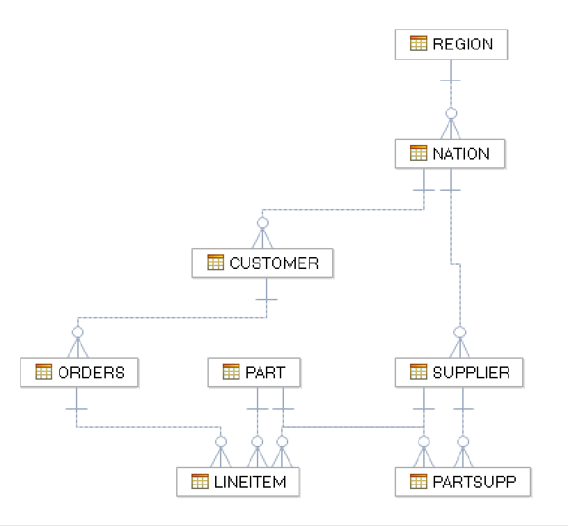

1 Optimizing Objects
The Netezza Performance Server is designed to provide excellent performance in most cases without any specific tuning or index creation. One of the key technologies used to achieve this simplicity are zone maps: Automatically computed and maintained metadata about the data columns inside the extents of a database table. In general data is loaded into a data warehouses naturally ordered by a time dimension: so zone maps have the biggest performance impact on queries that restrict the time dimension as well. This approach works well for most situations, but Netezza Performance Server provides additional functionality to enhance specific workloads, which we will use in this chapter. We will first use materialized views to enhance performance of database queries against wide tables and for queries that only lookup small subsets of columns. Then we will use Cluster Based Tables to enhance query performance of queries which are using multiple lookup dimensions. Cluster Based Tables (CBT) are intended to order data based on specified columns so that the zone maps are most effective.
1.1 Objectives
In the last labs we have recreated a customer database in our Netezza Performance Server system. We have picked distribution keys, loaded the data and made some first performance investigations. In this lab we will take a deeper look at some customer queries and try to enhance their performance by organizing data to use zone maps most effectively.

Figure 1. LABDB database
Above is the data model for our customer database.
2 Lab Setup
This lab uses an initial setup script to make sure the correct user and database exist for the remainder of the lab. Follow the instructions below to run the setup script.
-
Login to NPS Command Line using one of these two methods.
a. Login to the VM directly and use the terminal application available inside the VM.
b. Connect to your Netezza Performance Server image using putty
-
If you are continuing from the previous lab and are already connected to NZSQL quit the NZSQL console with the \q command.
-
Prepare for this lab by running the setup script. To do this use the following two commands:
Input
cd ~/labs/optimizationObjects/setupLab
./setupLab.sh
Output
DROP DATABASE
CREATE DATABASE
ERROR: CREATE USER: object LABADMIN already exists as a USER.
ALTER USER
ALTER DATABASE
CREATE TABLE
CREATE TABLE
CREATE TABLE
CREATE TABLE
CREATE TABLE
CREATE TABLE
CREATE TABLE
CREATE TABLE
Load session of table 'NATION' completed successfully
Load session of table 'REGION' completed successfully
Load session of table 'CUSTOMER' completed successfully
Load session of table 'SUPPLIER' completed successfully
Load session of table 'PART' completed successfully
Load session of table 'PARTSUPP' completed successfully
Load session of table 'ORDERS' completed successfully
Load session of table 'LINEITEM' completed successfully
There may be error message at the beginning of the output since the script tries to clean up existing databases and users.
- Switch to the lab directory ~/labs/optimizationObjects. To do this use the following command: (Notice that you can use bash auto complete by using the Tab key to complete folder and files names)
Input
cd ~/labs/optimizationObjects
Output
[nz@localhost optimizationObjects]$
The command line prompt changes to reflect the directory you are in
(optimizationObjects).
3 Materialized Views
A materialized view is a view of a database table that projects a subset of the base table's columns and can be sorted on a specific set of the projected columns. When a materialized view is created, the sorted projection of the base table's data is stored in a materialized table on disk. Materialized views reduce the width of data being scanned in a base table. They are beneficial for wide tables that contain many columns (i.e. 50-500 columns) where typical queries only reference a small subset of the columns. Materialized views also provide fast, single or few record lookup operations. The thin materialized view is automatically substituted by the optimizer for the base table, allowing faster response, particularly for shorter tactical queries that examine only a small segment of the overall database table.
3.1 Wide Tables
In our customer scenario we have a couple of queries that do some basic computations on the LINEITEM table, but only use a few columns of the table. If the query could automatically use another table that had only the columns used, the query could be faster. Let's look at creating this kind of "materialized view" table.
- Connect to the lab database with the following command:
Input
nzsql labdb labadmin
Output
Welcome to nzsql, the IBM Netezza SQL interactive terminal.
Type: \h for help with SQL commands
\? for help on internal slash commands
\g or terminate with semicolon to execute query
\q to quit
LABDB.ADMIN(LABADMIN)=>
- The first thing we need to do is to make sure table statistics have been generated so that more accurate estimated query costs can be reported by explain commands which we will be looking at. Please generate statistics for the ORDERS and LINEITEM tables using the following commands.
Input
GENERATE STATISTICS ON ORDERS;
GENERATE STATISTICS ON LINEITEM;
Output
LABDB.ADMIN(LABADMIN)=> GENERATE STATISTICS ON ORDERS;
GENERATE STATISTICS
LABDB.ADMIN(LABADMIN)=> GENERATE STATISTICS ON LINEITEM;
GENERATE STATISTICS
- The following query computes the total quantity of items shipped and their average tax rate for a given month. In this case the fourth month or April. Execute the following query:
Input
SELECT SUM(L_QUANTITY), AVG(L_TAX) FROM LINEITEM
WHERE EXTRACT(MONTH FROM L_SHIPDATE) = 4;
Output
SUM | AVG
-------------+----------
13136228.00 | 0.039974
(1 row)
Notice the EXTRACT(MONTH FROM L_SHIPDATE) command. The EXTRACT command
can be used to retrieve parts of a date or time column like YEAR,
MONTH or DAY.
- Now let's have a look at the cost of this query. To get the projected cost from the Optimizer we use the following EXPLAIN VERBOSE command:
Input
EXPLAIN VERBOSE SELECT SUM(L_QUANTITY),AVG(L_TAX)
FROM LINEITEM WHERE EXTRACT(MONTH FROM L_SHIPDATE) = 4;
Output
EXPLAIN VERBOSE SELECT SUM(L_QUANTITY), AVG(L_TAX) FROM LINEITEM WHERE
EXTRACT(MONTH FROM L_SHIPDATE) = 4;
QUERY VERBOSE PLAN:
Node 1.
[SPU Sequential Scan table "LINEITEM" {(LINEITEM.L_ORDERKEY)}]
-- Estimated Rows = 60012, Width = 16, Cost = 0.0 .. 6907.1, Conf = 80.0
Restrictions:
(DATE_PART('MONTH'::"VARCHAR", LINEITEM.L_SHIPDATE) = 4)
Projections:
1:LINEITEM.L_QUANTITY 2:LINEITEM.L_TAX
Node 2.
[SPU Aggregate]
-- Estimated Rows = 1, Width = 32, Cost = 6921.2 .. 6921.2, Conf = 0.0
Projections:
1:SUM(LINEITEM.L_QUANTITY)
2:(SUM(LINEITEM.L_TAX) / "NUMERIC"(COUNT(LINEITEM.L_TAX)))
[SPU Return]
[HOST Merge Aggs]
[Host Return]
..< Removed Plan Text >..
Notice the highlighted cost associated with the table scan. In our example it's a value of over 6000.
- Since this query is run frequently, we want to enhance the scanning performance. And since it only uses 3 of the 16 LINEITEM columns we have decided to create a materialized view covering these three columns. This should significantly increase scan speed since only a small subset of the data needs to be scanned. To create the materialized view THINLINEITEM execute the following command:
Input
CREATE MATERIALIZED VIEW THINLINEITEM AS
SELECT L_QUANTITY, L_TAX, L_SHIPDATE FROM LINEITEM;
Output
CREATE MATERIALIZED VIEW
This command can take several minutes since we effectively create a copy of the three columns of the table.
- Repeat the explain call from step 2. Execute the following command:
Input
EXPLAIN VERBOSE SELECT SUM(L_QUANTITY), AVG(L_TAX)
FROM LINEITEM WHERE EXTRACT(MONTH FROM L_SHIPDATE) = 4;
Output
QUERY VERBOSE PLAN:
Node 1.
[SPU Sequential Scan mview "_MTHINLINEITEM" {(LINEITEM.L_ORDERKEY)}]
-- Estimated Rows = 60012, Width = 16, Cost = 0.0 .. 1841.9, Conf = 80.0
Restrictions:
(DATE_PART('MONTH'::"VARCHAR", LINEITEM.L_SHIPDATE) = 4)
Projections:
1:LINEITEM.L_QUANTITY 2:LINEITEM.L_TAX
Node 2.
[SPU Aggregate]
-- Estimated Rows = 1, Width = 32, Cost = 1856.0 .. 1856.0, Conf = 0.0
Projections:
1:SUM(LINEITEM.L_QUANTITY)
2:(SUM(LINEITEM.L_TAX) / "NUMERIC"(COUNT(LINEITEM.L_TAX)))
[SPU Return]
[HOST Merge Aggs]
[Host Return]
..< Removed Plan Text >..
Notice that the Netezza Performance Server Optimizer has automatically replaced the LINEITEM table with the view THINLINEITEM. We didn't need to make any changes to the query. Also notice that the expected cost has been reduced from 6900 to 1800, which is 4 times less!
In cases where you have wide database tables where queries only use a subset of the columns, a materialized view of the hot columns can significantly increase performance for these queries. And without any rewriting of the queries.
3.2 Lookup of small set of rows
Materialized views not only reduce the width of tables, they can also be used in a similar way to indexes to increase the speed of queries that only access a very limited set of rows.
- First, we drop the view we used in the last chapter with the following command:
Input
DROP VIEW THINLINEITEM;
Output
DROP VIEW
- The following command returns the number of returned shipments vs. total shipments for a specific shipping day. Execute the following command:
Input
SELECT SUM(
CASE WHEN L_RETURNFLAG <> 'N'
THEN 1
ELSE 0
END) AS RET, COUNT(*) AS TOTAL
FROM LINEITEM
WHERE L_SHIPDATE='1995-06-15';
Output
RET | TOTAL
-----+-------
176 | 2550
(1 row)
You can see that on the 15^th^ June of 1995 there have been 176 returned shipments out of a total of 2550. Notice the use of the CASE statement to change the L_RETURNFLAG column into a Boolean 0-1 value, which is easily countable.
-
We will now look at the underlying data distribution of the LINEITEM table and its zone map values. To do this exit the nzsql console by executing the \q command.
-
In our VM image we installed the Netezza Performance Server support tools. You can find them as an installation package in /nz/support/bin. One of these tools is the nz_zonemap tool that returns detailed information about the zone map values associated with a given database table. First let's have a look at the zone mappable columns of the LINEITEM table. Execute the following command:
Input
cd ~/labs/optimizationObjects
/nz/support/bin/[nz_zonemap LABDB LINEITEM
Output
Database: LABDB
Object Name: LINEITEM
Object Type: TABLE
Object ID : 201277
The zone-mapped columns are:
Column # | Column Name | Data Type
----------+---------------+-----------
1 | L_ORDERKEY | INTEGER
2 | L_PARTKEY | INTEGER
3 | L_SUPPKEY | INTEGER
4 | L_LINENUMBER | INTEGER
11 | L_SHIPDATE | DATE
12 | L_COMMITDATE | DATE
13 | L_RECEIPTDATE | DATE
(7 rows)
This command returns an overview of the zone-mappable columns of the LINEITEM table in the LABDB database. Seven of the sixteen columns have zone maps created for them. Zone-mappable columns include integer and date data types. We see that the L_SHIPDATE column we have in the WHERE condition of the customer query is zone-mappable.
- Now we will have a look at the zone map values for the L_SHIPDATE column. Execute the following command:
Input
nz_zonemap LABDB LINEITEM L_SHIPDATE
Output
Database: LABDB
Object Name: LINEITEM
Object Type: TABLE
Object ID : 201277
Data Slice: 1
Column 1: L_SHIPDATE (DATE)
Extent # | gap | L_SHIPDATE(min) | L_SHIPDATE(max) | Sort
----------+-----+-----------------+-----------------+------
1 | | 1992-01-04 | 1998-11-29 |
2 | | 1992-01-06 | 1998-11-30 |
3 | | 1992-01-03 | 1998-11-28 |
4 | | 1992-01-02 | 1998-11-29 |
5 | | 1992-01-04 | 1998-11-29 |
6 | | 1992-01-03 | 1998-11-28 |
7 | | 1992-01-04 | 1998-11-29 |
8 | | 1992-01-04 | 1998-11-30 |
9 | | 1992-01-07 | 1998-12-01 |
10 | | 1992-01-03 | 1998-11-28 |
11 | | 1992-01-05 | 1998-11-27 |
12 | | 1992-01-03 | 1998-12-01 |
13 | | 1992-01-03 | 1998-11-30 |
14 | | 1992-01-04 | 1998-11-30 |
15 | | 1992-01-06 | 1998-11-27 |
16 | | 1992-01-03 | 1998-11-30 |
17 | | 1992-01-02 | 1998-11-29 |
18 | | 1992-01-07 | 1998-11-29 |
19 | | 1992-01-04 | 1998-11-30 |
20 | | 1992-01-04 | 1998-11-30 |
21 | | 1992-01-03 | 1998-11-30 |
22 | | 1992-01-04 | 1998-11-29 |
(22 rows)
This command returns a list of all extents that make up the LINEITEM table and the minimum and maximum values of the data in the L_SHIPDATE column for each extent.
You can see that the LINEITEM table consists of 22 extents of data (3MB chunks on each data slice). We can also see the minimum and maximum values for the L_SHIPDATE column in each extent. These values are stored in the zone map and automatically updated when rows are inserted, updated or deleted. If a query has a where condition on the L_SHIPDATE column that falls outside of the data range of an extent, the whole extent can be discarded by Netezza Performance Server without scanning it.
In this case the data has been equally distributed on all extents. This means that our query which has a WHERE condition on the 15^th^ June of 1995 (1995-06-15) doesn't profit from the zone maps and requires a full table scan. Not a single extent could be safely ruled out.
- Enter the NZSQL console again by entering the nzsql labdb labadmin command.
Input
nzsql labdb labadmin
Output
Welcome to nzsql, the IBM Netezza SQL interactive terminal.
Type: \h for help with SQL commands
\? for help on internal slash commands
\g or terminate with semicolon to execute query
\q to quit
LABDB.ADMIN(LABADMIN)=>
- We will now create a materialized view that is ordered on the L_SHIPDATE column. Execute the following command:
Input
CREATE MATERIALIZED VIEW SHIPLINEITEM AS
SELECT L_SHIPDATE FROM LINEITEM ORDER BY L_SHIPDATE;
Output
CREATE MATERIALIZED VIEW
Note that our customer query has a WHERE condition on the L_SHIPDATE column but aggregates the L_RETURNFLAG column. However, we didn't add the L_RETURNFLAG column to the materialized view. We could have done it to enhance the performance of our specific query even more. But in this case we assume that there are lots of customer queries which are restricted on the ship date and access different columns of the LINEITEM table. A materialized view retains the information about the location of a parent row in the base table and can be used for lookups even if columns of the parent table are accessed in the SELECT clause.
You can specify more than one order column. In this case the rows are first ordered by column one. For rows where column one has the same value the next column is used to order rows, and so on. In general, only the first order column provides a significant impact on performance.
-
Let's have a look at the zone map of the newly created view. Leave the nzsql console again with the \q command.
-
Display the zone map values of the materialized view SHIPLINEITEM with the following command:
Input
/nz/support/bin/nz_zonemap LABDB SHIPLINEITEM L_SHIPDATE
Output
Database: LABDB
Object Name: SHIPLINEITEM
Object Type: MATERIALIZED VIEW
Object ID : 201320
Data Slice: 1
Column 1: L_SHIPDATE (DATE)
Extent # | gap | L_SHIPDATE(min) | L_SHIPDATE(max) | Sort
----------+-----+-----------------+-----------------+------
1 | | 1992-01-02 | 1993-04-12 |
2 | | 1993-04-12 | 1994-05-28 | true
3 | | 1994-05-28 | 1995-07-08 | true
4 | | 1995-07-08 | 1996-08-20 | true
5 | | 1996-08-20 | 1997-10-01 | true
(5 rows)
We can make a couple of observations here. First the materialized view is significantly smaller than the base table, since it only contains one column. We can also see that the data values in the extent are ordered on the L_SHIPDATE column. This means that for our query, which is accessing data from the 15^th^ June of 1995, only extent 3 needs to be accessed at all, since only this extent has a data range that contains this date value.
- Now let's verify that our materialized view is indeed used for this
query. Enter the nzsql console by entering the following command:
nzsql labdb labadmin.
Input
nzsql labdb labadmin
Output
Welcome to nzsql, the IBM Netezza SQL interactive terminal.
Type: \h for help with SQL commands
\? for help on internal slash commands
\g or terminate with semicolon to execute query
\q to quit
LABDB.ADMIN(LABADMIN)=>
- Use the EXPLAIN command again to verify that our materialized view is used by the Optimizer:
Input
EXPLAIN VERBOSE SELECT SUM(
CASE
WHEN L_RETURNFLAG <> 'N'
THEN 1
ELSE 0
END) AS RET, COUNT(*) AS TOTAL
FROM LINEITEM WHERE L_SHIPDATE='1995-06-15';
Output
QUERY VERBOSE PLAN:
Node 1.
[SPU Sequential Scan mview index "_MSHIPLINEITEM" {(LINEITEM.L_ORDERKEY)}]
-- Estimated Rows = 2359, Width = 1, Cost = 0.0 .. 3.2, Conf = 80.0
Restrictions:
(LINEITEM.L_SHIPDATE = '1995-06-15'::DATE)
Projections:
1:LINEITEM.L_RETURNFLAG
Node 2.
[SPU Aggregate]
-- Estimated Rows = 1, Width = 24, Cost = 3.5 .. 3.5, Conf = 0.0
Projections:
1:SUM(CASE WHEN (LINEITEM.L_RETURNFLAG <> 'N'::BPCHAR) THEN 1 ELSE 0 END)
2:COUNT(*)
[SPU Return]
[HOST Merge Aggs]
[Host Return]
..< Removed Plan Text >..
Notice that the Optimizer has automatically changed the table scan to a scan of the view SHIPLINEITEM we just created. This is possible even though the projection is taking place on column L_RETURNFLAG of the base table.
- In some cases, you might want to disable or suspend an associated materialized view. For troubleshooting or administrative tasks on the base table. For these cases use the following command to suspend the view:
Input
ALTER VIEW SHIPLINEITEM MATERIALIZE SUSPEND;
Output
NOTICE: MATERIALIZE SUSPEND: SHIPLINEITEM
ALTER VIEW
- We want to make sure that the view is not used anymore during query execution. Execute the EXPLAIN command for our query again:
Input
EXPLAIN VERBOSE SELECT SUM(CASE WHEN L_RETURNFLAG <> 'N'
THEN 1 ELSE 0 END) AS RET, COUNT(*) AS TOTAL
FROM LINEITEM WHERE L_SHIPDATE='1995-06-15';
Output
QUERY VERBOSE PLAN:
Node 1.
[SPU Sequential Scan table "LINEITEM" {(LINEITEM.L_ORDERKEY)}]
-- Estimated Rows = 2359, Width = 1, Cost = 0.0 .. 6907.1, Conf = 80.0
Restrictions:
(LINEITEM.L_SHIPDATE = '1995-06-15'::DATE)
Projections:
1:LINEITEM.L_RETURNFLAG
Node 2.
[SPU Aggregate]
-- Estimated Rows = 1, Width = 24, Cost = 6907.5 .. 6907.5, Conf = 0.0
Projections:
1:SUM(CASE WHEN (LINEITEM.L_RETURNFLAG <> 'N'::BPCHAR) THEN 1 ELSE 0 END)
2:COUNT(*)
[SPU Return]
[HOST Merge Aggs]
[Host Return]
Scroll up till you see your explain query. With the view suspended we can see that the optimizer again scans the original table LINEITEM. And the cost has increased significantly.
- Note that we have only suspended our view not dropped it. We will now reactivate it with the following refresh command:
Input
ALTER VIEW SHIPLINEITEM MATERIALIZE REFRESH;
Output
```bash NOTICE: MATERIALIZE REFRESH: SHIPLINEITEM ALTER VIEW
This command can also be used to reorder materialized views in case the base table has been changed. While INSERTs, UPDATEs and DELETEs into the base table are automatically reflected in associated materialized views, the view is not reordered for every change. Therefore, it is advisable to refresh them periodically -- especially after major changes to the base table.
- To check that the Optimizer again uses the materialized view for query execution, execute the following command:
Input
EXPLAIN VERBOSE SELECT SUM(CASE WHEN
L_RETURNFLAG <> 'N' THEN 1 ELSE 0 END) AS RET, COUNT(*) AS TOTAL
FROM LINEITEM WHERE L_SHIPDATE='1995-06-15';
Output
QUERY VERBOSE PLAN:
Node 1.
[SPU Sequential Scan mview index "_MSHIPLINEITEM" {(LINEITEM.L_ORDERKEY)}]
-- Estimated Rows = 2359, Width = 1, Cost = 0.0 .. 3.2, Conf = 80.0
Restrictions:
(LINEITEM.L_SHIPDATE = '1995-06-15'::DATE)
Projections:
1:LINEITEM.L_RETURNFLAG
Node 2.
[SPU Aggregate]
-- Estimated Rows = 1, Width = 24, Cost = 3.5 .. 3.5, Conf = 0.0
Projections:
1:SUM(CASE WHEN (LINEITEM.L_RETURNFLAG <> 'N'::BPCHAR) THEN 1 ELSE 0 END)
2:COUNT(*)
[SPU Return]
[HOST Merge Aggs]
[Host Return]
..< Removed Plan Text >..
Make sure that the Optimizer again uses the materialized view for its first scan operation. The output should again look like before you suspended the view.
- If you execute the query again you should get the same results as you got before creating the materialized view.
Execute the query again:
Input
SELECT SUM(CASE WHEN L_RETURNFLAG <> 'N' THEN 1 ELSE 0 END) AS RET,
COUNT(*) AS TOTAL
FROM LINEITEM WHERE L_SHIPDATE='1995-06-15';
Output
RET | TOTAL
-----+-------
176 | 2550
(1 row)
You have just created a materialized view to speed up queries that lookup small numbers of rows. A materialized view can provide a significant performance improvement and is transparent to end users and applications accessing the database. But it also creates additional overhead during INSERTs, UPDATEs and DELETEs, requires additional disc space, and it may require regular maintenance. Therefore, materialized views should be used sparingly. In the next chapter we will discuss an alternative approach to speed up scan speeds on a database table.
4 Cluster Based Tables (CBT)
We have received a set of new customer queries on the ORDERS table that not only restricts the table by order date, but also restricts orders to a specified price range. These queries make up a significant part of the system workload and we will look at ways to increase the performance for them. The following query is a template for the queries in question. It returns the aggregated total price of all orders by order priority for a given year (in this case 1996) and price range (in this case between 150000 and 180000).
SELECT O_ORDERPRIORITY, SUM(O_TOTALPRICE) FROM ORDERS
WHERE EXTRACT(YEAR FROM O_ORDERDATE) = 1996 AND
O_TOTALPRICE > 150000 AND
O_TOTALPRICE <= 180000 GROUP BY O_ORDERPRIORITY;
In this example we have a very restrictive WHERE condition on two columns: O_ORDERDATE and O_TOTALPRICE. This can help us to increase performance. The ORDERS table has around 220,000 rows with an order date of 1996 and 160,000 rows with the specified price range. But it only has 20,000 columns that satisfy both conditions. Materialized views provide their main performance improvements on one column. Also, INSERTs to the ORDERS table are frequent and time critical, so we would prefer not to use materialized views. Instead, we investigate the use of cluster based tables in this chapter.
Cluster based tables are Netezza Performance Server tables that are created with an ORGANIZE ON keyword. They use a special space filling algorithm to organize a table by up to 4 columns. Zone maps for a Cluster Based Table (CBT) will provide approximately the same performance increases for all organization columns. This is useful if your query restricts a table on more than one column or if your workload consists of multiple queries hitting the same table but using different columns in WHERE conditions. In contrast to materialized views no additional disc space is needed, since the base table itself is reordered to maximize the effectiveness of zone maps.
4.1 Cluster Based Table Usage
Cluster based tables are created like normal Netezza Performance Server database tables. They need to be flagged as a CBT during table creation by specifying up to four organization columns. An Netezza Performance Server table can be altered at any time to become a Cluster Based Table as well.
-
We are going to change the create table command for ORDERS to create a Cluster Based Table. We will create a new CBT called ORDERS_CBT. Exit the nzsql console by executing the
\qcommand. -
Switch to the optimization lab directory by executing the following command:
Input
cd ~/labs/optimizationObjects
- We have supplied a script for the creation of the ORDERS_CBT table but we need to add the ORGANIZE ON (O_ORDERDATE, O_TOTALPRICE) clause to create the table as a cluster based table organized on the O_ORDERDATE and O_TOTALPRICE columns. To change the CREATE statement open the orders_cbt.sql script in the vi editor with the following command:
Input
vi orders_cbt.sql
-
Enter the insert mode by pressing "i", the editor should now show an
---INSERT MODE---statement in the bottom line. -
Navigate the cursor on the semicolon ending the statement. Press enter to move it into a new line. Enter the line "organize on (o_orderdate, o_totalprice)" before it. Your screen should now look like the following.
create table orders_cbt ( o_orderkey integer not null , o_custkey integer not null , o_orderstatus char(1) not null , o_totalprice decimal(15,2) not null , o_orderdate date not null , o_orderpriority char(15) not null , o_clerk char(15) not null , o_shippriority integer not null , o_comment varchar(79) not null ) distribute on (o_orderkey) organize on (o_orderdate, o_totalprice); -- INSERT -- -
Exit the insert mode by pressing
Esc. -
Enter
:wq!In the command line and press Enter to save and exit without questions. -
Create and load the ORDERS_CBT table by executing the following script:
Input
./create_orders_test.sh
Output
ERROR: relation does not exist LABDB.ADMIN.ORDERS_CBT
CREATE TABLE
Load session of table 'ORDERS_CBT' completed successfully
This may take a couple minutes because of our virtualized environment. You may see an error message that the table ORDERS_CBT does not exist. This is expected since the script first tries to clean up an existing ORDERS_CBT table.
- We will now have a look at how Netezza has organized the data in this table. For this we use the nz_zonemap utility again. Execute the following command:
Input
/nz/support/bin/nz_zonemap labdb orders_cbt
Output
Database: LABDB
Object Name: ORDERS_CBT
Object Type: TABLE
Object ID : 201883
The zone-mapped columns are:
Column # | Column Name | Data Type
----------+----------------+---------------
1 | O_ORDERKEY | INTEGER
2 | O_CUSTKEY | INTEGER
4 | O_TOTALPRICE | NUMERIC(15,2)
5 | O_ORDERDATE | DATE
8 | O_SHIPPRIORITY | INTEGER
(5 rows)
This command shows you the zone mappable columns of the ORDERS_CBT table. If you compare it with the output of the nz_zonemap tool for the ORDERS table, you will see that it contains the additional column O_TOTALPRICE. Numeric columns are not zone mapped per default for performance reasons, but zone maps are created for them if they are part of the organization columns.
- Execute the following command to see the zone map values of the O_ORDERDATE column:
Input
/nz/support/bin/nz_zonemap labdb orders_cbt o_orderdate
Output
Database: LABDB
Object Name: ORDERS_CBT
Object Type: TABLE
Object ID : 201883
Data Slice: 1
Column 1: O_ORDERDATE (DATE)
Extent # | gap | O_ORDERDATE(min) | O_ORDERDATE(max) | Sort
----------+-----+------------------+------------------+------
1 | | 1992-01-01 | 1998-08-02 |
2 | | 1992-01-01 | 1998-08-02 |
3 | | 1992-01-01 | 1998-08-02 |
4 | | 1992-01-01 | 1998-08-02 |
5 | | 1992-01-01 | 1998-08-02 |
6 | | 1992-01-01 | 1998-08-02 |
(6 rows)
This is unexpected. Since we used O_ORDERDATE as an organization column we would have expected an ordering in the data values. But they are again distributed equally over all extents.
The reason for this is that the organization process takes place during a command called GROOM, not during a nzload of the table. Instead of creating a new table we could also have altered the existing ORDERS table to become a Cluster Based Table. Creating or altering a table to become a CBT doesn't change the physical table layout until the groom command has been used.
This command will be covered in detail in the following presentation and lab. But we will use it in the next chapter to reorganize the table.
4.2 Cluster Based Table Maintenance
When a table is created as a CBT in Netezza the data isn't organized during load time. Similar to ordered materialized views, a Cluster Based Table can become partially unordered due to INSERTs, UPDATEs and DELETEs. A threshold is defined for reorganization and the groom command can be used at any time to reorganize a CBT, based on its organization keys.
- To organize the table you created in the last chapter you need to switch to the nzsql console again. Execute the following command: nzsql labdb labadmin
Input
nzsql labdb labadmin
Output
Welcome to nzsql, the IBM Netezza SQL interactive terminal.
Type: \h for help with SQL commands
\? for help on internal slash commands
\g or terminate with semicolon to execute query
\q to quit
LABDB.ADMIN(LABADMIN)=>
- Execute the following command to groom your cluster-based table:
Input
groom table orders_cbt;
Output
NOTICE: Groom will not purge records deleted by transactions that started after 2021-04-01 05:56:33.
NOTICE: Groom processed 588 pages; purged 0 records; scan size grew by 32 pages; table size unchanged.
GROOM ORGANIZE READY
This command does a variety of things which will be covered in a further presentation and lab. In this case it organizes the CBT based on its organization keys.
Warning
This command requires a lot of RAM on the SPUs to operate. Our VMWare systems have been tuned so the command should be able to finish. Since the whole table is reordered it may take a couple of minutes to finish but should you get the impression that the system is stuck please inform the lecturer.
-
Let's have a look at the data organization in the table. To do this quit the nzsql console with the \q command.
-
Review the zone maps of the two organization columns by executing the following command:
Input
/nz/support/bin/nz_zonemap labdb orders_cbt o_orderdate o_totalprice
Output
Database: LABDB
Object Name: ORDERS_CBT
Object Type: TABLE
Object ID : 201883
Data Slice: 1
Column 1: O_ORDERDATE (DATE)
Column 2: O_TOTALPRICE (NUMERIC(15,2))
Extent # | gap | O_ORDERDATE(min) | O_ORDERDATE(max) | O_TOTALPRICE(min) | O_TOTALPRICE(max)
----------+-----+------------------+------------------+--------------------+--------------------
1 | | 1992-01-01 | 1995-04-18 | 875.52 | 111093.84
2 | | 1992-01-01 | 1995-04-18 | 77984.34 | 215553.23
3 | | 1992-01-01 | 1995-04-18 | 178526.74 | 555285.16
4 | | 1993-08-27 | 1996-12-08 | 144451.84 | 487405.74
5 | | 1996-06-22 | 1998-08-02 | 77992.67 | 530604.44
6 | | 1995-04-18 | 1998-03-05 | 945.99 | 144446.76
(6 rows)
Your results should look like the above (we removed the "SORT" columns from the results to make it more readable)
You can see that both columns have some form of order now. Our query is restricting rows in two ranges
Condition 1: O_ORDERDATE = 1996
AND
Condition 2: 150000 < O_TOTALPRICE <= 180000
Below we have summarized the Extents on the full extent level of 3MB from our above result.
| Min(Date) | Max(Date) | Min(Price) | Max(Price) | Cond 1 | Cond 2 | Both Cond |
|---|---|---|---|---|---|---|
| 1992-01-01 | 1995-04-18 | 875.52 | 111093.84 | |||
| 1992-01-01 | 1995-04-18 | 77984.34 | 215553.23 | X | ||
| 1992-01-01 | 1995-04-18 | 178526.74 | 555285.16 | X | ||
| 1993-08-27 | 1996-12-08 | 144451.84 | 487405.74 | X | X | X |
| 1996-06-22 | 1998-08-02 | 77992.67 | 530604.44 | X | X | X |
| 1995-04-18 | 1998-03-05 | 945.99 | 144446.76 | X |
As you can see there are now 3 extents that have rows from 1996 in them and 4 extents that contain rows in the price range from 150000 to 180000. But we have only two extents that contains rows that satisfy both conditions and needs to be scanned during query execution.
The above shows the zone map ranges at the extent boundaries of 3MB. But Netezza Performance Server zone maps are even kept at the more granular level of pages. Netezza page size is 128K, and so there are 24 pages in one extent. You can look at the more granular zone map ranges for pages using the "-page" option of the nz_zonemap command:
Input
/nz/support/bin/nz_zonemap labdb orders_cbt o_orderdate o_totalprice -page
Output
Database: LABDB
Object Name: ORDERS_CBT
Object Type: TABLE
Object ID : 201883
Data Slice: 1
Column 1: O_ORDERDATE (DATE)
Column 2: O_TOTALPRICE (NUMERIC(15,2))
Extent # | Page # | O_ORDERDATE(min) | O_ORDERDATE(max) | O_TOTALPRICE(min) | O_TOTALPRICE(max)
----------+--------+------------------+------------------+--------------------+------------- ------+
1 | extent | 1992-01-01 | 1995-04-18 | 875.52 | 111091.08 |
1 | 1 | 1992-01-01 | 1992-10-28 | 912.10 | 26749.39 |
1 | 2 | 1992-03-17 | 1992-10-28 | 15080.65 | 45906.12 |
1 | 3 | 1992-01-01 | 1992-05-31 | 26812.15 | 65825.06 |
1 | 4 | 1992-01-01 | 1992-10-27 | 61941.14 | 77977.57 |
1 | 5 | 1992-05-31 | 1993-03-28 | 45915.67 | 71760.90 |
1 | 6 | 1992-10-28 | 1993-04-25 | 49997.93 | 77978.41 |
1 | 7 | 1993-03-28 | 1993-08-27 | 45922.72 | 77973.85 |
1 | 8 | 1992-10-29 | 1993-08-27 | 26801.08 | 54004.34 |
1 | 9 | 1992-10-28 | 1993-06-12 | 961.54 | 41500.41 |
1 | 10 | 1993-03-28 | 1994-01-25 | 875.52 | 26798.03 |
1 | 11 | 1993-08-27 | 1994-04-09 | 15020.44 | 45905.64 |
1 | 12 | 1994-01-25 | 1994-07-29 | 947.81 | 45779.43 |
1 | 13 | 1994-06-22 | 1995-04-18 | 1004.66 | 26775.18 |
1 | 14 | 1994-09-06 | 1995-04-18 | 15087.48 | 45906.49 |
1 | 15 | 1994-06-23 | 1994-11-19 | 26821.38 | 61934.12 |
1 | 16 | 1994-10-01 | 1995-04-18 | 45916.16 | 73765.70 |
1 | 17 | 1994-04-09 | 1995-04-17 | 61957.24 | 77974.31 |
1 | 18 | 1994-01-25 | 1994-06-22 | 45917.62 | 77944.43 |
1 | 19 | 1993-08-27 | 1994-04-09 | 45926.79 | 73846.86 |
1 | 20 | 1993-08-27 | 1994-01-25 | 69917.85 | 102685.89 |
1 | 21 | 1993-08-27 | 1994-06-22 | 94343.90 | 111089.11 |
1 | 22 | 1994-01-25 | 1994-10-02 | 77986.61 | 100585.11 |
1 | 23 | 1994-09-06 | 1995-04-18 | 77983.23 | 102725.22 |
1 | 24 | 1994-06-22 | 1995-04-18 | 94331.09 | 111091.08 |
2 | extent | 1992-01-01 | 1995-04-18 | 77984.34 | 215553.23 |
2 | 1 | 1994-06-22 | 1995-04-18 | 106892.35 | 127708.22 |
2 | 2 | 1994-09-05 | 1995-04-17 | 119478.05 | 144451.22 |
...
(161 rows)
There are 161 zone map ranges where reading the page can potentially be eliminated, not just 6 ranges on the extent boundaries. Of the 161 pages, the number that satisfy the conditions and need to be read are:
-
43 pages that might have O_ORDERDATE in 1996
-
54 pages that might have O_TOTALPRICE between 150000 and 180000
-
9 pages for which both conditions apply
This means by using CBTs in Netezza Performance Server architecture we can restrict the amount of data that needs to be queried by a factor of 16. This is 3-4 times less than would need to be read if the table is only ordered on a single column.
Congratulations, you have finished the Optimization Objects lab. In this lab you have created materialized views to speedup scans of wide tables and queries that only look up small numbers of rows. Finally, you created a Cluster Based Table and used the groom command to organize it. Throughout the lab you have used the nz_zonemap tool to see zone maps and get a better idea on how data is stored in the Netezza appliance.